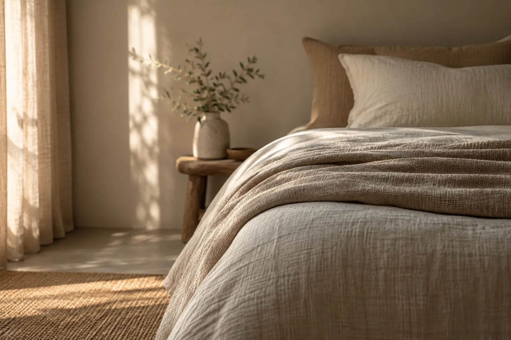

오래된 창고를 고쳐 쓰는 일
벽을 남기고 바닥을 바꾸면 방은 다시 쓰인다
여는 시간
화–금11:00–19:00
토·일10:00–18:00
월요일휴관
찾아오는 길
주소서동 43-2
지하철2호선 도보 7분
주차건물 뒤 6면
방문 안내
입장무료
단체사전 연락
촬영삼각대 불가
재료
바닥은 원래의 콘크리트를 갈아내 그대로 두었고, 벽은 회칠 위에 아무것도 덧바르지 않았습니다. 목재는 철거한 서까래를 다시 켜서 썼습니다.

오래된 창고를 고쳐 쓰는 일
화–금11:00–19:00
토·일10:00–18:00
월요일휴관
주소서동 43-2
지하철2호선 도보 7분
주차건물 뒤 6면
입장무료
단체사전 연락
촬영삼각대 불가
재료
바닥은 원래의 콘크리트를 갈아내 그대로 두었고, 벽은 회칠 위에 아무것도 덧바르지 않았습니다. 목재는 철거한 서까래를 다시 켜서 썼습니다.